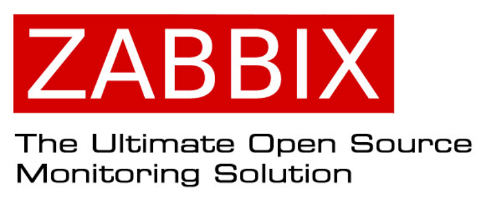

Installation et configuration de Zabbix
Mise en place d'une solution de supervision réseau avec Zabbix.

Présentation du projet
Ce projet a pour objectif de mettre en place une solution permettant de superviser une infrastructure informatique.
La solution utilisée est Zabbix , un outil de supervision permettant de surveiller différents équipements, serveurs et services d'un réseau.
Cette réalisation me permet de mettre en pratique des compétences liées aux systèmes et aux réseaux dans le cadre de ma formation en BTS SIO option SISR.